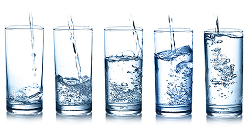

О воде
«Наяда 7,4» имеет рН =7,4, что в точности соответствует рН крови здорового человека и рН новорожденного ребенка. Также в «Наяда 7,4» сохраняется такие важные для организма щелочные минералы, как Na, Mg, Ca, K, которые могут присоединять к себе кислород и растворять его в воде. Соответственно эти минералы должны ежедневно присутствовать в нашей крови. При истощении системы поставки данных минералов рН уменьшается, что губительно для организма.
Особенно актуальным станет выбор «Наяда 7,4» для тех, кто тщательно следит за своим здоровьем, так как плохая экология, неправильное питание, употребление некачественной воды, стрессовые ситуации, курение, злоупотребление алкоголем, болезни и многое другое способствует разрушению окислительно-восстановительной системы регуляции, что пагубно сказывается на состоянии всего организма.
Приводим лишь некоторые из преимуществ слабощелочной воды
- способствует избавлению от загрязняющих веществ (что особенно важно в рамках нашего региона)
- быстро гидратируется (присоединяется)
- способствует правильному течению естественных биологических процессов
- позволит избавиться от избыточного веса
- повышает иммунитет и способствует ускорению процессов метаболизма
- способствует лучшему усвоению питательных веществ
- продлевает нашу жизнь
Дайте отдохнуть вашим почкам!
Воду ТМ «Наяда» можно пить без кипячения. Вода обеззаражена при помощи озона, исключает на 100% содержание бактерий, вирусов, грибков и плесени. Не оставляет накипи и солевого налета. Может быть использована, как для приема лекарств и гигиенических целей, так и в ежедневном рационе.
Очищенная вода по методу обратного осмоса - это вода, прошедшая через мембраны, аналогичные мембранам нашего организма. Напитки и супы, приготовленные на обессоленной воде, обладают великолепными вкусовыми качествами.
Имея такую структуру, вода беспрепятственно проникает в каждую клетку нашего организма. «Наяда» это чистая высококачественная вода, которая соответствует всем санитарно-эпидемиологическим нормам и имеет сертификат соответствия, выданный Министерством Экономического Развития и Торговли Украины . Получить воду, из которой удалены 99,9% тяжелых металлов и вредных примесей позволяют только установки обратного осмоса. Ни один бытовой фильтр не справится с этой задачей.